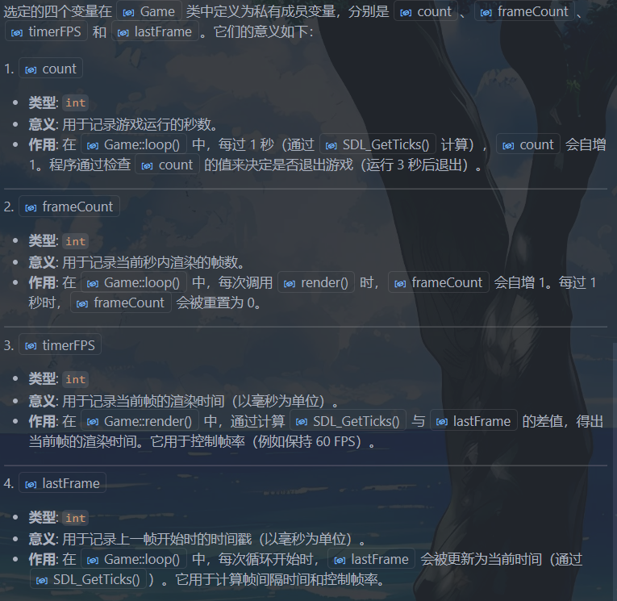
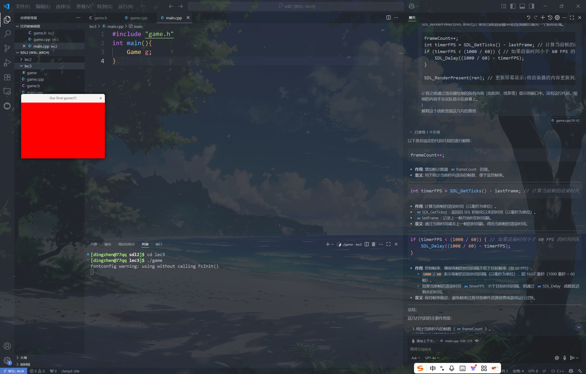

📚 sdl2 learning
lec2: FPS, Keyboard, Fullscreen
#include <SDL2/SDL.h>
#include <iostream>
#define WIDTH 1280
#define HEIGHT 720
bool running, fullscreen;
SDL_Renderer* renderer;
SDL_Window* window;
int frameCount, timerFPS, lastFrame, fps;
void update() {
if (fullscreen) SDL_SetWindowFullscreen(window, SDL_WINDOW_FULLSCREEN);
if (!fullscreen) SDL_SetWindowFullscreen(window, 0);
}
void input() {
SDL_Event e;
while (SDL_PollEvent(&e)) {
if (e.type == SDL_QUIT) running = false;
}
const Uint8* keystates = SDL_GetKeyboardState(NULL);
if (keystates[SDL_SCANCODE_ESCAPE]) running = false;
if (keystates[SDL_SCANCODE_F11]) fullscreen =!fullscreen;
}
void draw() {
SDL_SetRenderDrawColor(renderer, 40, 43, 200, 255);
/*
作用: 设置渲染器的绘制颜色。
参数 (40, 43, 200, 255) 分别表示 红色 (R)、绿色 (G)、蓝色 (B) 和 透明度 (A)。
这里设置的颜色是一个蓝色调（RGB 值为 40, 43, 200），完全不透明（A = 255）。
*/
SDL_Rect rect;
rect.x = rect.y = 0; // 矩形的左上角坐标为 (0, 0)，即窗口的左上角。
rect.w = WIDTH;
rect.h = HEIGHT;
SDL_RenderFillRect(renderer, &rect);
frameCount++;
int timerFPS = SDL_GetTicks() - lastFrame;
if (timerFPS < (1000 / 60)) {
SDL_Delay((1000 / 60) - timerFPS);
}
SDL_RenderPresent(renderer);
}
int main() {
running = 1;
fullscreen = 0;
static int lastTime = 0;
if (SDL_Init(SDL_INIT_EVERYTHING) < 0)
//参数: SDL_INIT_EVERYTHING:这是一个宏，表示初始化 SDL 的所有子系统（如视频、音频、计时器等）。
std::cout << "Failed at SDL_Init()" << std::endl;
if (SDL_CreateWindowAndRenderer(WIDTH, HEIGHT, 0, &window, &renderer) < 0) //指向 SDL_Window* 的指针，用于存储创建的窗口。
std::cout << "Failed at SDL_CreateWindowAndRenderer()" << std::endl; //指向 SDL_Renderer* 的指针，用于存储创建的渲染器。
SDL_SetWindowTitle(window, "SDL2 Window");
SDL_ShowCursor(1);
SDL_SetHint(SDL_HINT_RENDER_SCALE_QUALITY, "2");//用于设置 SDL 渲染器的缩放质量提示。
/*
"0"：最近邻算法（Nearest Pixel Sampling），速度快，但质量低。
"1"：线性插值（Linear Filtering），质量较高。
"2"：各向异性过滤（Anisotropic Filtering），质量最高。
*/
while (running) {
lastFrame = SDL_GetTicks();
if (lastFrame >= (lastFrame + 1000)) {
lastTime = lastFrame;
fps = frameCount;
frameCount = 0;
}
std::cout << fps << std::endl;
update();
input();
draw();
}
SDL_DestroyRenderer(renderer);
SDL_DestroyWindow(window);
SDL_Quit();
return 0;
}
lec3: Window & Gameloop
关于FPS： Frames Per Second，表示每秒钟渲染或显示的画面帧数，反映了游戏或图形程序运行的流畅程度。
常见的 FPS 范围： 30 FPS: 基本流畅，适合一些低要求的游戏或动画。 60 FPS: 流畅的体验，常见于大多数现代游戏。 120 FPS 或更高: 超高流畅度，适合高端显示器和硬件。

game.cpp
// game.cpp
# include "game.h"
#include <SDL2/SDL.h>
#include <SDL2/SDL_render.h>
Game::Game() {
SDL_Init(0);
SDL_CreateWindowAndRenderer(360, 240, 0, &win, &ren);
SDL_SetWindowTitle(win, "Our first game!!!");
running = true;
count = 0;
loop();
}
Game::~Game() {
SDL_DestroyRenderer(ren);
SDL_DestroyWindow(win);
SDL_Quit();
}
void Game::loop() {
while (running) {
/*
frameCount: 用于记录当前秒内渲染的帧数。
timerFPS: 用于计算当前帧的渲染时间。ms
lastFrame: 用于记录上一次渲染的时间戳，ms
*/
lastFrame = SDL_GetTicks();// ms
static int lastTime;
if(lastFrame >= (lastTime + 1000)) {
lastTime = lastFrame;
frameCount = 0;
count++;
}
render();
input();
update();
if(count > 3) running = false; // 运行3秒后退出
}
}
void Game::render(){
SDL_SetRenderDrawColor(ren,255,0,0,255);
/*
255, 0, 0: 表示颜色的 RGB 值，这里是红色（R=255，G=0，B=0）。
255: 表示颜色的 alpha 值（透明度），255 表示完全不透明。
*/
SDL_Rect rect;
rect.x = 0; // 矩形的左上角 x 坐标
rect.y = 0; // 矩形的左上角 y 坐标
rect.w = 360; // 矩形的宽度
rect.h = 240; // 矩形的高度
SDL_RenderFillRect(ren, &rect);// 使用当前渲染器ren的绘制颜色填充一个矩形区域。
frameCount++;
int timerFPS = SDL_GetTicks() - lastFrame; // 计算当前帧的渲染时间。ms
if (timerFPS < (1000 / 60)) { // 如果渲染时间小于 60 FPS 的时间间隔，则延迟以保持帧率。
SDL_Delay((1000 / 60) - timerFPS);
}
SDL_RenderPresent(ren); // 更新屏幕显示:将渲染器的内容更新到屏幕上。
// 将之前通过渲染器绘制的所有内容（如矩形、线条等）显示到窗口中。没有这行代码，绘制的内容不会实际显示在屏幕上。
}
game.h
// game.h
#ifndef GAME_H
#define GAME_H
#include <SDL2/SDL.h>
#include <iostream>
using namespace std;
class Game{
public:
Game();
~Game();
void loop();
void update(){}
void input(){}
void render();
private:
SDL_Renderer* ren;
SDL_Window* win;
bool running;
int count;// 记录游戏运行的秒数
int frameCount , timerFPS , lastFrame;
/*
frameCount: 用于记录当前秒内渲染的帧数。
timerFPS: 用于计算当前帧的渲染时间。ms
lastFrame: 用于记录上一次渲染的时间戳，ms
*/
};
#endif // GAME_H
运行效果：
